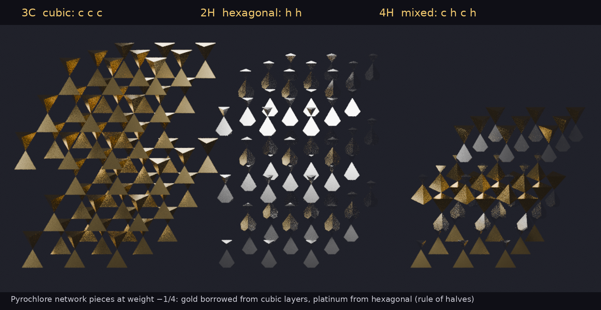

The rule of halves of #57 carried to the pyrochlore network, its layers stacked in any order
DICTO's idea (27 October 2026): "close packing halves rule pyrochlore network" — the rule of halves of #57 (DICTO DOI 10.5281/zenodo.23647898) on the pyrochlore network, its layers (kagome and triangular, seen down a three-fold axis) stacked in any order. The series paper #58 (DICTO DOI 10.5281/zenodo.23665944) tells the road to #57.
Theorem. In every close-packed stacking, and for every weight λ from −11/36 to 1/4, divide space by weight among the balls and diamond atoms (weight λ) and the two empty holes of each gap (weight 0). Then every piece is a piece of a pure stacking: a ball's piece is the ball piece of its own layer's pure stacking (cubic if the layer is c, hexagonal if h); a diamond atom's piece that of its nearest layer; and each hole piece, cut at its gap's mid-height, is a bottom half from the layer below and a top half from the layer above.
Where a cubic layer meets a hexagonal one, the hole pieces are therefore Janus c/h pieces, as in #57: a cubic half glued to a hexagonal half (in 4H, octahedral pieces of volume 0.346 and 0.325, beside 0.339 in the cubic and 0.332 in the hexagonal stacking). The tetrahedra of the network — the pieces of the balls and diamond atoms — are always whole, each from one layer; the Janus pieces are the network's open spaces.
The proof follows #57 and uses its exact engine unchanged (rational arithmetic throughout).
Locality. Near any gap, a stacking is fixed by the cubic or hexagonal type of the four layers round it: sixteen windows. Every corner of every piece of the central gap lies within squared distance 11/32 of its site (exact, at the ends of every stretch; convexity). A site whose letter the window does not fix is at least 2¼ layer spacings away in height, and the weights differ by at most 11/36, so its dividing plane stays at squared distance at least ((27/8 − 11/36)/(2·√(27/8)))² ≈ 0.698 from the site: it cannot touch the piece. So each piece is the same in every stacking that shares its window.
Pieces along every stretch. On each stretch of the walk (stops −11/36, −1/4, −3/20, 0, 1/8, 1/6, 1/4) every corner of every piece moves on a straight line in λ. For each of the sixteen windows and each stretch, one symmetry of the layer carries the corners of each whole piece (ball, diamond atom) onto those of its pure piece, and the corners above, on and below the mid-plane together with the cut points (exact rational functions of λ) of each half (octahedral and Y holes) onto those of its pure half: 384 of 384. As an independent check, the pieces are congruent to their pure pieces at twelve exact weights covering every stretch: 768 of 768.
Balls of spacing 1 in close-packed layers √(2/3) apart, stacked by a word in A, B, C. The diamond-type crystal (as silicon carbide) is the balls plus #57's tetrahedral hole "over X at 3/4" above each ball. The middles of its bonds form the pyrochlore network: round each atom four middles make a regular tetrahedron of edge 1/2, and every corner belongs to exactly two tetrahedra (checked for 3C, 2H, 4H and 6H). Each gap holds four sites: the ball S, the diamond atom C, the octahedral hole O and the other tetrahedral hole Y; the two empty holes are exactly the network's open spaces.
Computed exactly with #57's census engine, unchanged (rational arithmetic; every built-in check passed).
Cubic (3C). Stops at −3/8 (the atoms' pieces vanish), −1/4 (atoms regular tetrahedra, holes truncated tetrahedra of volume 23√2/96: the classical tetrahedral–truncated tetrahedral honeycomb), +1/4 (the roles swap: atoms truncated tetrahedra, holes tetrahedra), and +3/8 (the holes' pieces vanish).
Hexagonal (2H). Stops at −11/36, −1/4, −3/20, 0, 1/8, 1/6 and 1/4. At −1/4 the diamond atoms' pieces are still regular tetrahedra but the balls' pieces have ten corners: the regular pyrochlore tetrahedra are exact pieces only on cubic layers.

The pyrochlore lattice as the bond-middle lattice of diamond, and as alternating kagome and triangular layers along a three-fold axis, is standard in the physics of frustrated magnets; the cubic and hexagonal stackings of diamond-type crystals (diamond and lonsdaleite, zincblende and wurtzite) are standard; the tetrahedral–truncated tetrahedral honeycomb is classical; the rule of halves is #57 (DICTO). Not found in the sources searched (a library of 302 references, and the web, 27 October 2026): the rule of halves for pyrochlore stackings, or this weighted division of them.
Sources checked (27 October 2026; full record with queries: study folder, prior-art.md). Library (302 references; queries on pyrochlore stackings, weighted division of the holes of close-packed stackings, diamond stackings and bond midpoints): Okamoto, Nilsen, Attfield & Hiroi 2013, breathing pyrochlore lattice; Koca et al. 2015; Al-Siyabi, Koca & Koca 2020; Torquato & Jiao 2012; Betke & Henk 1999; de Graaf, van Roij & Dijkstra 2011; Gray 2002; Damasceno, Engel & Glotzer 2012; Krishnamurthy, Akleman et al. 2022; Quiquandon & Gratias 2014; Katz & Gratias 1993; Sun et al. 2010. Web (searches on hexagonal pyrochlore stackings and on stacking variants of the tetrahedral–truncated tetrahedral honeycomb): arXiv 1907.06413, 2404.09023, 1201.0677, 1210.6810, cond-mat/0201144, cond-mat/0412036, 0809.0079 and Phys. Rev. B 74, 172401 (pyrochlore as kagome and triangular layers); arXiv 2608.00138, 2210.17343, 1405.1261 (hexagonal diamond, wurtzite and stacking faults); Wikipedia, Quarter cubic honeycomb and Triakis truncated tetrahedral honeycomb. From #57's record: Hales' Kepler-proof decompositions, the Jagodzinski h/c notation, radical tessellations of fcc and hcp with pore spheres (Wang et al. 2018), Cadotte et al. 2016. Most were seen as titles and abstracts; those credited above were opened. None gives the rule of halves for pyrochlore stackings or their weighted division.
Study folder k-research studies/2026-10-27-pyrochlore-halves: pyro.py (construction), cells.py and halves.py (float division and halves), pyro_walk.py (exact walks with #57's engine), pyro_exact.py and pyro_stretch.py (the proof), figures.
Title by DICTO: DICTO Janus c/h Pyrochlore — the pyrochlore network whose pieces, like #57's Janus c/h pieces, are borrowed from the cubic (c) and hexagonal (h) stackings.